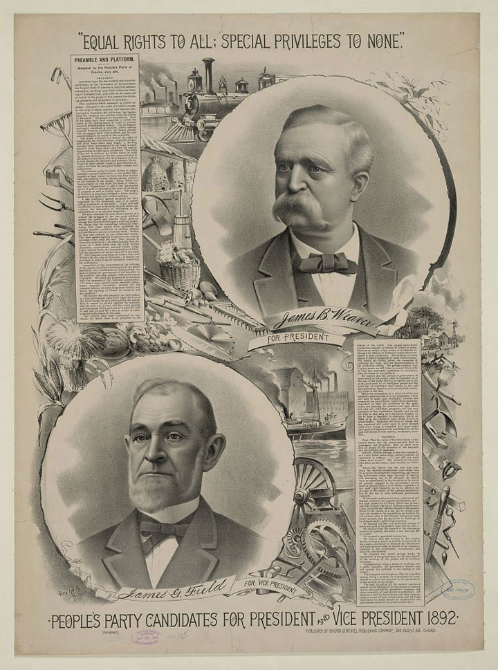
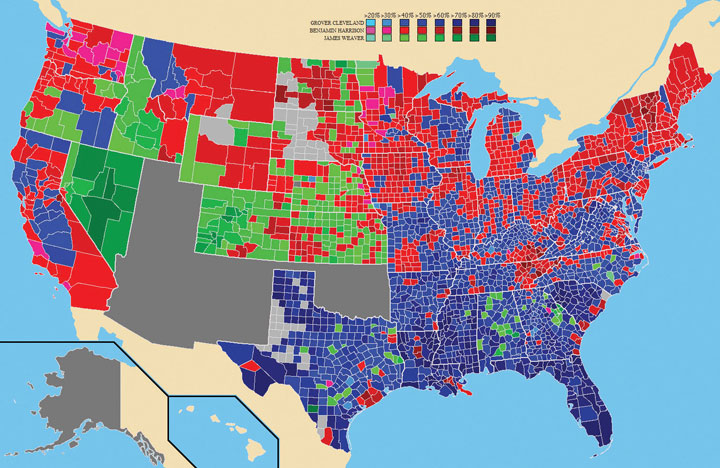
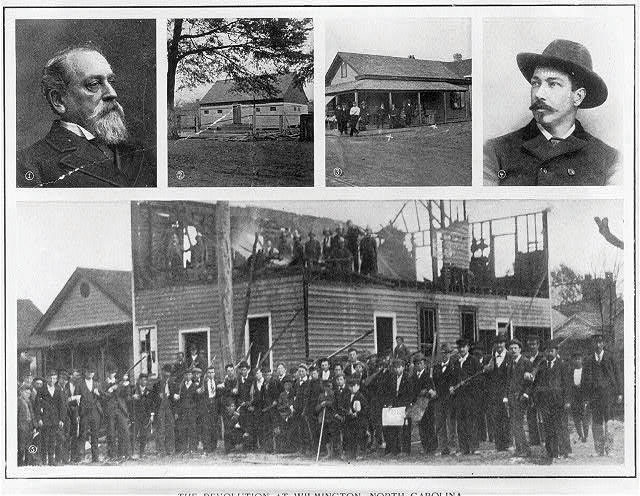
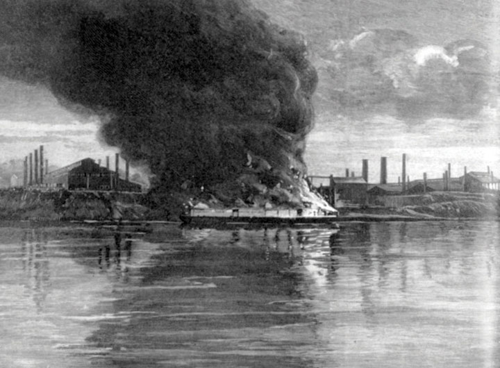
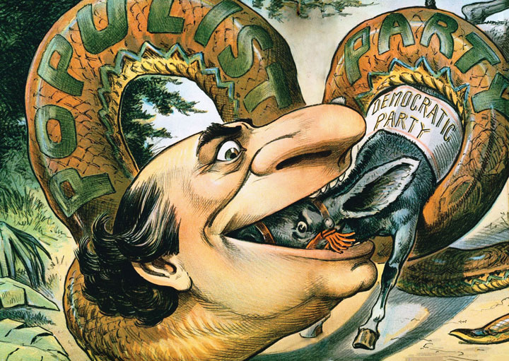

During the 1880s, farmer’s collective organizations known as the Grange declined, as did the Greenback Party. However, the twin ideals of monetary reform and legislation beneficial to farmers were carried on by a new organization called the Farmers’ AllianceThe Farmer’s Alliance was a national federation of autonomous local farmer’s organizations that sought to represent the interests of their members. Even more than the National Grange, which preceded them, the Farmer’s Alliance had a heavy influence on politics between Reconstruction and the turn of the century.. The alliance was similar to the Grange, and in fact, some local chapters of the alliance had previously been affiliated with the Grange. The first alliance chapter was organized in Texas and quickly expanded to include over a hundred chapters by the early 1880s. The alliance had spread so rapidly due to its outreach/education program that contracted with traveling lecturers. These individuals earned commissions when they organized new alliance chapters. The alliance also affiliated with various existing farmer’s associations and formed partnerships with nearly a thousand local newspapers, most of which were already in print. By 1888, there were 1.5 million alliance members nationwide. This rapid growth was greatly facilitated by the decision of existing organizations to affiliate with the Farmers’ Alliance. For example, the Agricultural Wheel had been formed in Arkansas and attracted half a million members in other Southern states. In this way, the alliance was slightly different from the Grange. Its base of membership was local, and its chapters were autonomous. Perhaps more importantly, the alliance welcomed women over the age of sixteen as full members, as well as white tenant farmers and sharecroppers. The alliance would occasionally work with leaders of the Colored Farmers’ National AllianceDue to the exclusionary policies of the Farmer’s Alliance, black farmers formed the Colored Farmers’ National Alliance at a meeting in Texas during 1886. The organization grew quickly and had as many as a million members at its peak., an organization that grew to a million members and remained independent of white alliances.
Women were especially active in the alliance, a unique feature of the organization when considering the conservatism of the South and rural West. Despite ideas about separate spheres of activity for women and men, female alliance members chaired meetings, organized events, and delivered lectures. A significant number of women held key leadership positions in local and state offices within the alliance from the Deep South to California. Most strikingly, women were full members of most alliance chapters in an age when most women could only participate in “men’s” organizations as members of separate female auxiliary chapters. The efforts of female alliance members were usually phrased in conservative terms that stressed traditional roles of protecting the home and children. However, the entities the home needed protection from were banks and railroads. Participation in the alliance placed women in the public realm of political activity, circulating petitions and holding debates in support of new laws.
Because the Grange represented only landowners, their efforts had been largely dedicated to cooperative efforts to create stores, grain elevators, and mills. Alliance chapters engaged in these economic activities as well, and women operated dozens of the alliance cooperative stores. The alliance was even more active than the Grange had been in the political realm. Because its membership was more economically diverse, many of its chapters sought more radical reforms on behalf of poor farmers and landless tenant farmers. For the alliance, securing legislation protecting landowning farmers from the monopolistic practices of banks, commodities brokers, and railroads was only the beginning.
In 1887, the lobbying efforts of the nascent alliance, along with other farmers’ associations, led Congress to pass the Interstate Commerce ActA law demanded by farmers and passed in 1887 that required railroads to establish standard fares and publish these rates. This prevented the informal pricing practices that often discriminated against small farmers who had few options when it came time to ship their grain to the market.. The law required railroads to establish standard rates and publish these prices. It also prohibited railroads from giving free passes or other benefits to try and sway lawmakers and journalists from being favorable to railroad interests. The law also required that these rates be “reasonable and just” and created the Interstate Commerce Commission to regulate the business practices of railroads. These were seemingly commonsensical government reforms from the perspective of farmers, especially given the practices of some unscrupulous railroad operators. Prior to 1887, railroads could arbitrarily raise rates around harvest time or charge different rates to different customers to win the business of large firms. Small farmers had little chance of getting such discounts.
By 1890, a similar reform movement was being waged by small businesses and consumer advocates. These groups lobbied for the passage of the Sherman Anti-Trust ActA federal law passed in 1890 that gave the government the power to break up corporations that it believed were acting in restraint of free trade by forming monopolies or engaging in other practices that allowed firms to artificially raise prices., a law aimed at reducing the power of monopolies. Supporters of the new law believed that businesses, which should naturally be competing with one another, were often secretly working in concert to reduce competition by forming trusts. For example, the Beef Trust was an arrangement between the largest beef packers where members agreed not to bid against one another when purchasing livestock from individual farmers. If each leading purchaser of cattle refused to bid against one another, the price of cattle would be kept artificially low to the benefit of the beef packer and the detriment of the farmer. Dozens of trusts also maintained informal agreements against starting “price wars,” where each promised not to lower the price they charged consumers.
Figure 3.8

This satirical “nursery rhyme” depicts the oil trusts as a “modern Bill Sikes,” a reference to a fictional villain in Charles Dickens’s popular novel Oliver Twist.
Corporations defended themselves from their critics by pointing to the inefficiencies that occurred in the past when there were dozens of beef packers, oil refineries, and other competing businesses in every major city. In many cases, prices had declined when these companies merged or affiliated with the various trusts that controlled their industry. Although there was truth in these claims, there was equal validity to accusations of unfair business practices. The Sherman Anti-Trust Act gave the federal government unprecedented powers and empowered it to break up corporations that had formed “combinations in restraint of trade.” This vague phrase was intended to give wide-ranging power to those who sought to enforce the law and dissolve trusts. The new law was hailed as an end to monopoly; however, nearly all of the lawsuits brought under the terms of the law in the next fifteen years were dismissed on technicalities. In fact, corporations actually benefitted from the actions of courts during this time after the Supreme Court redefined the Fourteenth Amendment to defend the rights of corporations against the state.
From the perspective of farmers, the legal system was being commandeered by attorneys representing railroads and trusts. These entities were undermining both the Interstate Commerce Act and Sherman Anti-Trust Act, reformers believed, while the government stood idly by or actively assisted those who represented the trusts. Railroads continued to overcharge small farmers in violation of the Interstate Commerce Act, largely because the law required farmers to initiate a complaint. The understaffed regulatory commission could only investigate a small fraction of these complaints, and even when they believed they had a case they rarely had the resources to match their opposition. The same was true regarding anti-trust acts for ranchers who sold beef or grain to large corporations.
Figure 3.9

Alliance leaders met in Ocala, Florida, during December 1890. A number of local alliance chapters had already turned to political action by this time. For example, these alliance members in Columbus, Nebraska, formed their own political party and nominated a ticket of farmers for local and national office in July 1890.
Despite these frustrations, the partial victory of getting these laws passed and securing a handful of convictions also led to increased political activism among alliance members. In addition, the diminishing price of grain in the late 1880s led a number of farmers to view the alliance as a possible source of protection against economic decline. Alliance-sponsored lecturers continued to travel throughout the rural South and West during these lean years, touting the value of collective action. They also resurrected the ideas of rural Greenbackers and spoke against the gold standard and its tight money supply which kept interest rates high and farm prices low. Already influential in state and local politics in over a dozen states, the National Alliance turned to national politics. In 1890 they held a convention in Ocala, Florida. Their goal was to establish a platform that would unite alliance members from coast to coast. Equally important, alliance leaders sought political partnerships with labor unions and various middle-class reform movements representing the growing urban population. Delegates to the Ocala convention hoped their efforts would lay the groundwork for a new political party that would unite farmers and factory workers and represent the majority of working Americans. The degree to which they succeeded is still a subject of debate among historians.
Delegates to the 1890 meeting drafted what became known as the Ocala Demands, a list of proposed changes to the nation’s political and financial system that challenged the conservative and laissez-faire policies of the era. The National Alliance dominated the Ocala meeting, and most alliance chapters endorsed the Ocala Demands and supported its vision of federal action on behalf of farmers. Chief among these reforms was a proposal to create federally subsidized warehouses where farmers could store their grain until they decided the market price was favorable. Many local alliance chapters had already tried to provide this service for their members, but most had failed in their objective because their members were in debt and could not afford to store their grain for more than a few weeks. Dubbed subtreasuries, alliance members believed these federal warehouses would solve their dilemma by issuing immediate payment of up to 80 percent of the crop’s present value. As a result, buyers would no longer be able to force cash-strapped farmers to sell their grain shortly after harvest. If all farmers participated in subtreasuries across the nation, the alliance argued, brokers and trusts could no longer dictate the price of grain.
The subtreasury planA proposal that was advocated by farmer’s organizations such as local Alliance chapters wherein the federal government would subsidize the construction of grain warehouses where farmers could store their grain in anticipation of better market prices. Farmers believed this would stabilize commodity prices and protect indebted farmers who often had no choice but to sell their grain as soon as it was harvested regardless of market conditions. demonstrated a revolution in sentiment among America’s farmers away from the concept of limited government that had typified Thomas Jefferson’s ideal of rural America. Instead of achieving freedom from government via laissez-faire policies and small government, the idea was now freedom through government via regulation and the subtreasury plan. In addition to this novel innovation, the Ocala Demands included a host of other ideas that had been proposed by both rural and urban reformers in the previous two decades. The delegates called for lower tariffs and greater regulation of railroads, although they stopped short of advocating direct government ownership of railroads. The platform also recommended the reinstatement of federal income taxes, which had been abandoned since the end of the Civil War. Although the wording of the resolution itself was nonspecific, alliance members intended that only the middle and upper classes would pay taxes, with the wealthiest paying higher rates. The Ocala Demands also supported the notion of governmental reform and direct democracy. The current practice at this time was for state legislators to appoint U. S. senators, but the Ocala Demands called for the direct election of US senators by popular vote. Relatively obscure in its own time, the Ocala convention and its demands would shape American political debate for the next decade.
The platform also supported a monetary policy that would soon be known as “free silverThe shorthand nickname given to the idea that the government should print money that was backed by both gold and silver. This would place more money into circulation, which would make it easier to obtain loans and provide a measure of relief for indebted farmers. Opponents believed that abandoning the gold standard would reduce foreign investment and destroy value of the dollar.”—an abbreviation of the phrase “the free coinage of silver.” This phrase simply meant that the US mint would create silver coins and/or print bills redeemable for silver and place them into circulation alongside the existing currency that was backed by gold. The word free simply meant “unlimited” in this context and was meant to differentiate their plan from the Sherman Silver Purchase Act of 1890, which will be described later. Because currency was redeemable for a certain amount of gold, the government could only print an amount of money equal to the total value of gold reserves it controlled. While the population and the total amount of wealth increased each year, new discoveries and purchases of gold lagged behind. As a result, the strict application of the gold standard would mean that there would be such a small amount of currency in circulation that the laws of supply and demand would actually cause the dollar to increase in value each year.
Deflation caused the value of currency to increase over time. Although this sounds good in theory it can have disastrous effects on the growth of the economy. Deflation meant that those who wished to borrow money had to pay very high rates for two reasons. First, the relative amount of currency in circulation was shrinking, which meant borrowers faced stiff competition from other borrowers and lenders could practically name their terms. Secondly, because the value of currency increased each year, banks could also make money by simply hoarding their cash. This deflation of the currency was exactly what those with money wanted, and exactly what indebted farmers feared. For those who have more debt than currency, printing more money and causing inflation would actually bring a measure of relief.
The Sherman Silver Purchase Act of 1890 was intended to provide a small measure of that relief to farmers and others in debt. It required the government to purchase a limited amount of silver each month and then increase the amount of money in circulation by creating silver certificates that would be used just like the dollar. However, the plan did not work because consumers and investors preferred gold-backed currency. To make matters worse, the Silver Act financed the purchase of silver by issuing notes that could be redeemed in either silver or gold. Most holders of these notes immediately exchanged the notes for gold, which did nothing to increase the amount of money in circulation. Worse, these redemptions pushed US gold reserves dangerously low. The result was deflation, panic on Wall Street, and banks further restricting the amount of money they were willing to loan.
Figure 3.10

A political cartoon showing William Jennings Bryan who backed the idea of free silver on a one dollar bill. The bill bearing the image of his opponent William McKinley, a defender of the gold standard, is worth almost twice as much as Bryan’s money. The intended message was that the idea of free silver would cause economic instability. The slogans “We Want No Change” and “Four More Years of the Full Dinner Pail” were meant to support the status quo and the reelection of William McKinley.
Those who favored maintaining the gold standard cited the failure of the Sherman Silver Purchase Act as “proof” that increasing the idea of “free silver” was dangerous. In fairness, the Sherman Silver Purchase Act was not a fair test of the idea because it did not provide for the “free” (unlimited) coinage of silver. More importantly, the Sherman Silver Purchase Act did not treat silver-backed money as regular currency. The Ocala Demands sought to remedy this situation by having US currency backed by both gold and silver. It would create a flexible exchange rate that would eliminate any incentive for speculation or redeeming currency for one metal or the other. It also required the government to issue enough currency backed by silver that at least $50 per capita was in circulation at any given moment.
The alliance also formed partnerships with the Knights of Labor and especially laborers in mining and the railroad industry. Hoping to create a political party representing all productive laborers from the factories to fields, the Populist Party (known officially as the People’s Party) was formed after a series of conventions in 1892. National Farmer’s alliance president Leonidas L. Polk was nominated as the new party’s presidential candidate. Unfortunately, Polk died prior to the party’s national convention which was held in Omaha, Nebraska, in July 1892. Delegates at the Omaha convention nominated the former Greenback leader James B. Weaver in his place. Building on the ideas of the Ocala Demands, delegates created the Omaha PlatformThe formal statement of the policies of the People’s Party (also known as the Populists) that was issued at its formative meeting in Omaha, Nebraska, in July 1892.. This Populist statement of policy was drafted in hopes of uniting the demands of labor unions and the Farmer’s Alliance.
The Omaha Platform of 1892 may have been the most significant political document of the late nineteenth century, even though the Populist Party itself would dissolve within a decade. Although many of its specific regulations regarding economic and agricultural reform were not adopted, the ideas of the Omaha Platform would shape debate for years to come. In addition, many of its provisions would eventually become law. For example, the Omaha Platform called for immigration restriction (adopted in 1921 and 1924), the establishment of federal income tax (adopted in 1913 with the ratification of the Sixteenth Amendment), and the direct election of US senators (also adopted in 1913 with the ratification of the Seventeenth Amendment). The platform also advocated more direct democracy by granting the people the power to submit laws through referendum and the ability to recall elected officials before their term ended. The Omaha Platform also advocated the eight-hour working day, term limits for politicians, use of secret ballots in all elections, and printing money that was not backed by gold. With the exception of government ownership of railroads and telegraph lines, nearly all of the major goals of the Populist were eventually adopted by law or custom.
Figure 3.11
Populist candidate for president in 1892 James B. Weaver and vice presidential candidate James G. Field ran under the banner “Equal Rights to All, Special Privileges to None.” Field was a former Confederate general from Virginia while Weaver was a former abolitionist from Iowa. The two hoped to demonstrate national unity in an era of continued sectionalism in politics.
In the near term, however, the Populists struggled to attract supporters. Populists believed that the Republicans and Democrats both represented the money interest, a term referring to bankers and wealthy corporations who benefitted from the limited amount of currency in circulation. As a result, their platform advocated many of the ideas of the Greenback Party. However, most industrial workers were not in debt as farmers were. They feared inflation would increase prices faster than wages would rise. They also shared many of the same concerns of their employers and feared that altering the nation’s financial system could lead to instability and unemployment.
Figure 3.12

A photo showing armed men who enforced the declaration of a Republican victory in Kansas. A number of Populist leaders had seized control of the statehouse but the doors were broken and these deputized men regained control. Notice that this force included African Americans, who accounted for as many as 20 percent of Republican voters in southeastern Kansas and the state capital of Topeka.
Workers also tended to support tariffs on foreign imports because these taxes protected domestic production. Tariffs are taxes on imported goods. Without tariffs, overseas factories could sell their products in the United States for lower prices. Farmers tended to oppose tariffs because the nation was an exporter of cotton, grain, and other agricultural commodities. When the United States charged tariffs on foreign manufactured goods, other nations retaliated by imposing taxes on American exports. Farmers hoped reducing America’s tariffs would inspire other nations to do the same, reducing the taxes placed on American exports like cotton and grain. In short, farmers and workers may have shared similar experiences, but they often did not share identical financial interests. As a result, the Populist Party struggled to expand from an agrarian movement to one that united both farmers and urban laborers.
Populist presidential candidate James B. Weaver won over a million votes and carried Idaho, Nevada, Colorado, and Kansas in the 1892 election. The Populists also influenced the national election in 1892 when the Democratic candidate Grover Cleveland defeated incumbent Republican Benjamin Harrison—a reversal of the 1888 election in which Harrison had defeated Cleveland. The Republican and Democratic campaigns focused on issues such as the tariff. From the perspective of the Populists, this was only one of many issues and one that distracted from the more meaningful reforms they proposed. On a local level, Democrats and Republicans vied for control of Eastern cities and states, while the rising Populist Party secured numerous victories in the South and West. Populists even claimed victory in a majority of the districts of the Kansas state legislature. However, a three-day “war” between armed Populist and Republican politicians within the state capital led to arbitration and the Republicans ended up claiming a majority of the seats in the legislature.
Figure 3.13
A map showing county-by-county results in the 1892 election. Notice the success of the Populists in the West and the pockets of support for the Populists in the otherwise solidly Democratic South.
The Populists were a growing political force beyond the West. After the 1892 election, Populists controlled a significant number of seats in state legislatures throughout the South as well as the western plains and mountain states. The party even sent 14 delegates to Congress, while a dozen states selected Populist governors for at least one term during the 1890s. The growth of the People’s Party also led to cooperative efforts between members of the two major parties and the Populists. Representatives of the Republicans and Democrats often nominated a single ticket composed of candidates from their party and a handful of Populists. This strategy of two political parties joining together to defeat the dominant party of a particular region became known as fusionIn this context, fusion was the strategy of merging two independent political parties under one ticket in order to increase the likelihood of winning elections.. In Western states such as Nebraska, where the Republican Party was dominant, Populists and Democrats often joined forces. Pockets of Republicanism managed to survive past Reconstruction in Southern states such as Tennessee, Virginia, and Texas, but the Democrats still dominated state politics. In these states, Populists and Republicans used the strategy of fusion to defeat a number of Democratic candidates. Fusion was most effective in North Carolina where black Republicans and white Populists created a fusion ticket and together swept the 1894 legislative and gubernatorial elections.
Despite continuing efforts to keep black voters from the polls, over 100,000 black voters cast ballots in each state of the Deep South in the early 1890s. As a result, white Southern Populist leaders from Texas to Virginia worked to mobilize black voters in ways that saw limited cooperation across the color line in politics for the first time since the end of Reconstruction. White Populist leaders agreed on the need to unite farmers and laborers, but they remained hesitant to embrace people of diverse racial and ethnic backgrounds for fear of being labeled as “radicals.” This issue was especially problematic in the South. Although some Southern whites recognized that they shared common economic and political interests with African American farmers and sharecroppers, white alliance leaders rarely cooperated with black leaders. In most cases, the failure to cross racial lines proved the Achilles’s heel of Southern Populism. At other times, the economic interests of white and black farmers were not identical. For example, some white farmers owned land that was rented to black sharecroppers and tenant farmers.
Excluded from the Southern alliance, black Southerners established the Colored Farmers’ National Alliance in 1886. In 1891, a group of black cotton pickers around Memphis who were working on white-owned land organized a strike and demanded higher wages during the harvest season. Whites lynched fifteen leaders of this strike. The local white alliances were silent on the matter despite the fact that each of these men had been members of the Colored Farmers’ National Alliance. At other times, white and black farmers shared the same concerns. For example, a boycott against jute producers crossed the color line and spread from Texas to Georgia. Jute was used to produce the sacks that protected cotton bales. When an alliance of jute producers conspired to raise their prices, black and white alliance members throughout the South united and made their own bags from cotton until the “jute trust” backed down.
Historians have often been tempted to exaggerate the degree of cooperation between white Democrats and black Republicans in the South during the 1890s. Georgia’s white Populist leader Tom WatsonA leading Southern Populist, Tom Watson was an editor and Georgia politician who sought to unite poor white Southerners against the elite landowning families he believed still controlled the state through the Democratic Party. spoke forcibly against the methods some Democrats had used to intimidate and disfranchise black voters in the past. He and other white Georgia Populists even defended the life of a black politician from an armed white mob. However, Watson and nearly every other white Populist of the South were firmly committed to white supremacy and saw their partnership with black voters in tactical terms. They opposed the fraud and intimidation of black voters only when it was used against black men who supported the Populist Party. White Populists believed they were “educating” black voters by lecturing them about how voting for the Populist ticket would aid white farmers and landlords, providing benefits that would “trickle down” to black sharecroppers. If landlords could avoid paying high rates to railroads and men who controlled commodities markets, they argued, the landlords could then pay black tenants and sharecroppers higher wages.
From the perspective of black voters, Southern Populists were not much different from Southern Democrats who tolerated black suffrage so long as black voters agreed to vote as instructed. If the Populists spoke out against the knight-riding tactics that were similar to the Klan’s, it was largely because those tactics had favored Democrats in the past and were beginning to be used against white Populists. At the same time, the fact that some white Populists in the South sought a degree of cooperation with black political organizations made Southern Populists different from the Democratic Party. As a result, Southern black voters sought to maintain their independence and distance, but also sought tactical partnerships with white Populists.
Figure 3.14 Marion Butler of North Carolina

North Carolina’s Marion Butler personified the racial tensions and tactics of white Populists. As a leader of his county chapter of the Southern alliance, Butler edited a Populist newspaper called the Caucasian. The masthead of Butler’s paper originally exclaimed “Pure Democracy and White Supremacy.” However, this was removed when the Populists decided they could advance their interests by courting black voters. Butler recognized that the only way to defeat the heavy majority enjoyed by the Democratic Party in North Carolina was to form a partnership with the Republican Party, even if it still contained many political leaders from the Reconstruction Era. Butler agreed to head a fusion ticket in 1894, including a number of white and black Republican leaders among white Populist candidates. Black Republicans and white Populists united behind the ticket, which swept the state. The Populist victory in North Carolina resulted in Butler’s election to the US Senate at the ripe old age of thirty-two. It also brought hundreds of local alliance leaders into the Populist-dominated state legislature. The Populist victory also resulted in George Henry White’s election to the US House of Representatives. White would be the last black Southerner to serve in Congress until the 1970s.
Progressive for its era and region, race relations in North Carolina would soon implode. The astounded Democrats launched an offensive against Butler and white Populists as traitors to their race. Ironically, Butler’s position as a defender of white supremacy should have been clear. Butler and the rest of the white Populist leaders were outspoken in their beliefs that black men and women were inherently inferior to whites. If Populists were different from Democrats in terms of race, Butler explained, it was because they were “not in favor of cheating and fraud” to exclude black voters. The Democrats shared no such reservations and branded Butler as a liberal who favored interracial marriage. They also created Red Shirt clubs that promised to redeem white women from the indignity of purchasing stamps from the handful of black postmasters the Populists had appointed.
The Red Shirts then decided to use force to take control of the local government, much like what white mobs had done in Louisiana during Reconstruction. They destroyed the homes and businesses of black leaders and precipitated a massacre in Wilmington in November 1898. Officially known as the Wilmington Race RiotAn outbreak of violence against African Americans and black businesses in Wilmington, North Carolina, following the defeat of the Democratic Party in November 1898. Republicans and Populists had joined together to sweep the elections, but many of the victorious candidates were forced to give up their positions or simply fled the city for their lives., Red Shirts murdered a dozen black men, ransacked black communities, and burned the office of the African American newspaper the Wilmington Daily Record. The violence was anything but random, as Wilmington was the largest city in the state and contained a black majority that had just defeated the Democratic Party’s local candidates in the November election. Dedicated to controlling the entire state, white Democrats ran many of the few remaining Republican-Populist officials out of town and took control of the state legislature by force.
Only in the wake of such atrocity could North Carolina Populists be viewed as racial moderates. Populists were willing to give black voters a separate and subservient place in political and economic life. In return, they expected black voters to express their gratitude at the polls by supporting white candidates. In exchange for convincing men of their race to “vote properly,” a handful of black leaders might be appointed to minor offices. Black voters understood the limitations of their Populist “allies.” From the perspective of many black voters, however, fusion with the Populists could result in tactical gains such as funding for black schools and laws that might encourage fair treatment for sharecroppers.
Figure 3.15
The remains of the offices of the Wilmington Daily Record in the wake of the 1898 Wilmington Race Riot.
In the end, even this possibility for limited cooperation and tactical gains was derailed as North Carolina Democrats launched a malicious campaign. Black voters faced lynch mobs, the homes of black leaders were attacked, and white Populists were labeled Yankees and “lovers” of black women and men. Few white Populists were racial liberals, but these racial accusations were repeated with such frequency and intensity that truth became irrelevant. These accusations were also very effective. The Democrats swept the 1898 elections in North Carolina and enacted poll taxes that prevented all sharecroppers and tenants without access to cash from voting.
In 1900, North Carolina followed the pattern of establishing subjective literacy tests as a requirement for all voters. The tests empowered white registrars to disqualify black voters, regardless of their educational level. Given the recent campaigns against him, Butler phrased his opposition to the literacy test very carefully. Between various calls for white supremacy and his newfound desire to eliminate the menace of black suffrage, Butler meekly pointed out that literacy tests might unintentionally disfranchise hundreds of thousands of white voters. In response, the senator was subjected to death threats and labeled as a traitor to the white race. The Democratically controlled North Carolina legislature recognized that Butler’s argument was valid even as they excoriated him. They quietly responded by adopting a grandfather clause that effectively exempted whites from the literacy tests.
Populists in various other Southern states were likewise removed from office by many of the same methods. For example, Texas had been one of the leading states for Southern Populists until the adoption of the poll tax in 1902, a law that reduced the ability of poor farmers to vote. In 1923, Texas adopted a new technique to limit the effectiveness of black voters. The state created a system of primary elections in which only members of a particular party could vote. The direct primary was hailed as a progressive measure because it empowered the members of a party, rather than its leaders, to select their candidates. However, the Democratic Party restricted its membership to whites. Federal law did not permit such distinctions to be made in the general election, but the laws were silent regarding racial restrictions in private political organizations at this time. Even though black men could still legally vote in the general election, it mattered little because whoever won the Democratic nomination would easily defeat any candidate backed by minority voters or the nominal Republican Party of Texas. Black and Hispanic voters protested, but state and federal courts ruled that the Democratic Party could restrict membership however it chose. Attempts to declare the white-only primary a violation of the Fourteenth and Fifteenth amendments failed until 1944.
The decline of Southern Populism effectively ended the last meaningful and independent black participation in Southern public life until the mid-twentieth century. In response to claims of “negro domination” that mirrored the fears expressed by Redeemers during Reconstruction, white Southern Democrats revived and expanded the violence black voters. They also passed “reforms” to voting laws that were intended to bar African Americans. As a result, black voters were marginalized in the South for the next three generations. Poll taxes eventually excluded many white voters as well. However, poor whites and poor blacks continued to oppose one another and plant more cotton. Although they were all trapped in a cycle of downward mobility, the region’s elites successfully kept poor people divided against each other. However, these elites struggled with their own dilemmas, victims themselves of a colonialist model of finance that forced them to borrow at high rates. The South continued to grow cotton at depressed prices, a course of action that impoverished nearly everyone in the region and discouraged investment and innovation.
We are born in a Pullman house, fed from the Pullman shops, taught in the Pullman school, catechized in the Pullman Church, and when we die we shall go to the Pullman Hell.
—Alleged statement of a Pullman resident during the 1894 Pullman Strike.
It would become clear by the late 1890s that fusion with the major political parties was a short-sighted strategy. In 1892, however, the Populists were becoming increasingly influential in state and local politics throughout the West and the South. To capitalize on this momentum and become a significant force in national politics, the Populists would have to do better at attracting urban voters and Northern farmers. This presented a host of challenges given the often-competing economic interests of farmers who owned land and equipment and laborers who worked for wages. In addition, Populist leaders would have to overcome cultural traditions that divided Northerners and Southerners, and transcend the cultural divide between rural and urban America.
Finally, the Populists needed to find a way to resolve tensions between the ethnically, racially, and religiously diverse citizenry and their base within the Farmer’s Alliance, which were predominantly old-stock Anglo Protestants. From a strictly tactical point of view, the Populists did not have to secure the support of black voters or any particular ethnic group to become a national political party. However, the People’s Party could not succeed if it failed to secure a significant foothold among the workforce of urban America, which was becoming increasingly diverse. These voters tended to support local political machines that provided immediate and tangible benefits to their communities. Most urban dwellers were unenthusiastic about some aspects of the Populist platform that were designed to benefit farmers, especially plans to increase farm prices through federally financed warehouses.
Given these obstacles, the Populists were relatively successful in crafting a class-based message based on the solidarity of all workers and farmers against bankers and Capitalists. This success was partially due to a lingering recession that began in the early 1890s and became a full-fledged depression in 1893. The depression would linger until the late 1890s. Similar to the railroad speculation that triggered the economic problems of the 1870s, the Panic of 1893A financial crisis that was spurred by railroad speculation. The Panic of 1893 led to high unemployment and a depression that lasted for several years. began when leading railroads declared bankruptcy. By the end of the year, 500 banks had failed and unemployment neared 20 percent. Farmers had experienced several years of depression before the Wall Street crash, while industrial workers faced declining pay.
Figure 3.16
An engraving depicting barges burning during the Homestead Strike, which is listed as the “Homestead Riot” by the publisher of the magazine that printed these images in 1892. Students should consider the implications of referring to the event as either a “riot” or a “strike.”
The most patent example of labor strife before the Panic of 1893 occurred in the steel mills of Pennsylvania. In the spring of 1892, a plant owned by Andrew Carnegie in Homestead, Pennsylvania, reduced pay just as a hard-won union contract was coming to an end. Management had anticipated the workers’ decision to strike and stockpiled warehouses full of finished steel in advance. Management also contracted with the Pinkerton detective agency to escort strikebreakers into the factory. The intent was to crush the union, which had secured the previous contract with a strike. The aging Andrew Carnegie was genuinely distressed about the resulting violence, yet did nothing to intercede with the decisions of the plant managers. After workers armed themselves and seized control of the plant, managers of the Homestead plant hired replacement workers and Pinkerton guards. The striking men clashed with the Pinkertons and sought to keep the replacement workers from entering the plant. Several men died in the conflict which was later crushed by federal troops. Most of the formerly unionized workers that survived the Homestead StrikeOccurred in 1892 when steelworkers in Homestead, Pennsylvania, were locked out of their mills following demands for higher pay. The conflict turned violent in early July when workers clashed with armed guards hired by Carnegie Steel, leaving a dozen people dead and leading to the deployment of National Guard troops. meekly accepted the reduced pay, twelve-hour shifts, and elimination of their union. From the perspective of the workers in Pennsylvania, any tears the distant Andrew Carnegie cried for those who died at his plant were crocodilian.
A businessman in Ohio named Jacob Coxey was outraged by the Homestead Strike. In addition to his sympathy for the laborers, Coxey believed that the federal government should borrow money and provide temporary jobs until the economy recovered. Although this idea would serve as the basis of the New Deal response to the depression of the 1930s, the notion was considered radical during the depression of the 1890s. Coxey was an outstanding promoter, however, and led a group of a hundred workers who marched from central Ohio to the nation’s capital to ask for jobs. By the time they arrived, their numbers had grown to several hundred, and they were joined by several thousand other unemployed men who launched their own journeys to Washington, DC, from communities across America. The media dubbed these men “Coxey’s ArmyA group of several hundred protesters who marched to the nation’s capital in 1894 in support of the ideas of Ohio politician Jacob Coxey. These Ohioans were joined by hundreds of others who believed that the federal government should provide temporary jobs following the Panic of 1893. However, Coxey’s ideas were not seriously considered and his “army” was turned away..” The federal government treated them as invaders. Coxey was arrested for “trespassing” on what was actually pubic land, and most of his followers returned to their homes.
Coxey’s Army inspired Populist supporter L. Frank Baum to write the novel The Wizard of Oz based on Coxey’s efforts and the Populist message. Although its political meaning was soon forgotten, Baum intended the Scarecrow to represent farmers, the Tin Man to represent industrial workers, and the Cowardly Lion to embody political leaders who often lacked the courage to represent their constituents over powerful outside interests. Overcoming these shortcomings, the three characters unite with Dorothy—a female personification of the purity of the American people and the strength of Populism in the Great Plains. Together, they marched along the yellow-brick road, which symbolized the gold standard as measured by ounces (abbreviated as “oz”). Together, they withstood the sinister plot of the wicked witch. The witch represented the money interests of the East that sought to divide farmers, workers, and political leaders. The four heroes finally reach Oz and meet the Wizard, a small man who hid behind a facade of smoke and mirrors. In the end, the only way home was for Dorothy to click her heels together. Although modern audiences remember those shoes as being ruby red, they were actually silver in the original novel and represented the Populist goal of free silver as a panacea for the nation’s economic woes.
The Knights of Labor endorsed the Populist Party, but their numbers had declined substantially following a number of strikes that had been crushed by federal and state governments during the last two decades. Other unions were hesitant to back the Populists. Skilled workers at this time joined craft-specific unions that were affiliates of the American Federation of Labor (AFL)A national federation of independent craft unions that was formed after a meeting in Columbus, Ohio, in 1886. Leaders of most of the nation’s largest unions were present at this meeting and agreed to join the AFL to coordinate their activities and increase their political clout., a national confederation of independent unions, which had been founded in 1886 by Samuel GompersFounded the AFL and led that organization from 1886 until his death in 1924, with the exception of a period between 1894 and 1895 when members of the organization revolted against his leadership because of his lack of support for the People’s Party.. The AFL focused on tactical goals, such as pay increases, through collective bargaining and strikes. The AFL was relatively successful in this regard, and the 250,000 skilled workers it represented by 1892 had enjoyed modest pay increases prior to the start of the depression. However, these wage increases would not last and the majority of laborers were not eligible to join the AFL.
Gompers’s union remained more conservative than groups such as the Knights of Labor. The AFL generally excluded women and minorities and rejected ideas such as collective ownership of factories. Many AFL leaders were reluctant to join the Populists, especially Gompers. The AFL leader specifically warned its members about the potential dangers of affiliating with any political party, especially an unknown quantity like the Populists. For a few years in the mid-1890s, however, some AFL members rejected Gompers and his advice and supported the Populists.
A major strike was launched during the depression by a union that was more radical than the AFL, the United Mine Workers (UMW), which was formed in the summer of 1894. The workers had two main demands: First, the return of wages to previous levels, and second, that these wages would be paid in cash. In the wake of bank failures and depression, it was difficult and expensive to finance operations in US dollars. This difficulty led mining companies and some factories to issue their own currency known as scripCurrency that is issued by an employer or some other organization and is not a legal tender.. This employer-issued currency was not legal tender. As a result, miners and factory workers who were paid in scrip could only redeem their paychecks for goods at company-owned stores. These goods were usually overpriced. Payment in scrip also prevented workers from moving or finding new jobs because they had no cash. Others became dependent on credit accounts that had been opened on their behalf at the company store.
Figure 3.17

An image depicting American Railway Union leader Eugene Debs as “King Debs” during the Pullman Strike. In this anti-union image, Debs is depicted as preventing the movement of railcars that were full of food while factories were forced to sit idle for lack of coal and other supplies.
Although the UMW had only 15,000 members, miners were part of a unique culture that stressed brotherhood and mutual aid. These principles were a matter of life and death given the dangers of mining and the importance of teamwork in completing their daily work. This brotherhood inspired solidarity behind the strike and also led miners to march from one mine to another to spread the word of their activities. By May, a strike that began only weeks earlier had grown to include an estimated 250,000 miners nationwide. Many eastern miners in Pennsylvania were subjected to violence from hired men known euphemistically as “detectives.” The miners gave as good as they got in skirmishes in West Virginia, Illinois, and Ohio. In the isolated coal fields of Colorado, thousands of miners marched hundreds of miles to spread word of the strike and support one another. However, in the lean times of the depression, the mines still offered better pay than many jobs that were more susceptible to the forces of supply and demand. As a result, the operators successfully resisted union demands in the 1890s. The strikes cost the companies hundreds of thousands of dollars in lost revenue in addition to the expenses of hiring the police force that was used to break the strikes.
A second major strike occurred in 1894 involving the Pullman Palace Car Company near Chicago. Industrialist George Pullman experimented with a theory called welfare CapitalismA system where private employers provide services for the welfare of their workers, such as health care and other benefits., building a factory town to house the workers who built his passenger railcars. Pullman believed the brutal living conditions and high rents workers endured in cities were a leading cause for their unhappiness. He hoped that by creating a model city and paying for all of his workers’ expenses, he would avoid labor strikes and command a loyal workforce. By establishing a factory in the countryside with fresh air and no access to alcohol, Pullman believed, Illinois would be home to a healthy and sober workforce with unparalleled productivity.
The factory town of Pullman featured relatively spacious living quarters, a beautiful library and church, and a store where workers could purchase items on credit. Employee purchases at the store, as well as rent, were deducted from their paychecks. Pullman’s welfare Capitalism was less liberal, however, when it came to freedom of expression. He did not tolerate dissent or even independent organizations or meetings in his town. He employed inspectors who watched the employees to make sure they abided by his standards of clean living and were not organizing any kind of labor movement. Although outsiders marveled at the order and cleanliness of this factory town, workers resented the controlling aspects of their employer. Still, as long as wages were high, most at least appeared to agree with middle-class observers who considered industrial workers “lucky” to live in work in a town like Pullman.
The depression reduced the demand for Pullman’s luxury railcars, and the factory responded with layoffs and pay cuts. These cuts were not accompanied by reduced rents or prices in the company store. As a result, workers were faced with conditions that resembled what sharecroppers faced—they had little or no pay once their rent and expenses were deducted. Many of Pullman’s employees were members of the American Railway Union (ARU) led by Eugene DebsAn Indiana politician who became one of the leading national figures in labor and political history from the 1890s to the early 1920s. Eugene Debs was a founder of the American Railway Union and led the Pullman Strike. He would later grow more radical in his criticism of the Capitalist system and represent the Socialist Party as its candidate for president in several elections.. In May 1894, the ARU supported a local strike of Pullman workers. More significant was Debs’s nationwide strike of all ARU members who refused to work on any train that included cars made by the Pullman Company. The potential significance of the Pullman Strike was clear: by mobilizing all workers within an entire industry, a strike began by workers at a single company could have national implications.
By July, the nation’s rail traffic had slowed substantially due to the large number of Pullman railcars. Even if rail companies agreed to isolate the Pullman Company, its thousands of railcars could not simply be placed on sidetracks. The federal government responded by ordering the strike to end and mobilizing troops to force railroad workers to follow the orders of their bosses. When this gambit failed, the government required trains with Pullman cars to also transport the US mail. If workers refused to work on these trains, they could be charged with the federal crime of interfering with the US mail.
President Grover Cleveland vowed to end the strike by any means possible. “If it takes every dollar in the Treasury and every soldier in the United States Army to deliver a postal card in Chicago,” he declared, “that postal card should be delivered.” The US attorney general broke the strike by securing a court order demanding an end to the strike because by slowing rail traffic the unions were acting to restrain trade. This was a provision of the Sherman Anti-Trust Act that was originally intended to limit the power of corporations and trusts rather than labor unions. However, because one union—and a controversial union leader such as Debs—had succeeded in disrupting the nation’s transportation network, it appeared to many as if the ARU had become too powerful.
With the intervention of the federal government, the Pullman StrikeIn response to a decline in wages, workers at the factory town of Pullman, Illinois, declared a strike in the summer of 1894. They were supported by Eugene Debs and the American Railway Union, whose members declared their intention to make sure no railcar made by the Pullman Company moved until the wages of their fellow workers were restored. Believing that the strike was derailing economic recovery, the federal government used the army to end the strike. was crushed and train traffic resumed its previous volume. The union at the Pullman factory was broken, and ARU and union activism in general suffered a major defeat. Had the Pullman Strike been successful and if unions were permitted to use sympathy strikes such as Debs had intended, the balance of power between workers and corporations might have been drastically altered. Instead, the workers who had participated in the strike were fired. Some were even blacklisted, meaning they were branded as “troublemakers” and their names placed on a list that was circulated to other employers. Debs himself was sent to jail for six months for his violation of an earlier court order. His sentence did not curtail his growing radicalism, as the union leader began envisioning the creation of a utopia in the West. Five years later, Debs turned to Socialism in hopes of fulfilling his dream of worker solidarity.
Figure 3.18

This turn-of-the-century illustration proposes the idea that consumers were the victim of conflicts between labor and management. The image depicts conflict between a Capitalist labeled “Commercial Trust” and a worker labeled “Labor Trust” who is wielding a club labeled “Strike.” On his knees between the two is a helpless “Consumer” who appears to be begging for mercy.
A small strike in the coal fields of western Missouri and eastern Kansas in 1899 demonstrated the folly of excluding workers of a particular race or ethnicity. Management of the Kansas and Texas Coal Company intentionally recruited only black workers in hopes of convincing their lily-white workforce that all would be permanently replaced if they did not end their strike immediately. Railroad management circulated handbills throughout the South that advertised Missouri and Kansas as “the paradise for colored people.” While these circulars urged Southern blacks “to join your friends in the land of plenty,” the reception these men received was anything but friendly. The 1,200 black men who arrived in the region on special trains that summer immediately recognized that their reception might be slightly less friendly than promised. Their convoys stopped to pick up armed guards, and management instructed the riders against looking out of their windows. A Midwestern sheriff demonstrated a much stronger prejudice than typified Southern lawmen, threatening to prevent blacks from entering his city “if it takes deputizing every man in Cherokee County [Kansas].” As a result, the miners were housed in stockades guarded by state troops and Pinkerton guards. If western Missouri and eastern Kansas was paradise for black men, one new arrival reportedly exclaimed, this was “as near as [he] ever wanted to get to heaven.”
You come to us and tell us that the great cities are in favor of the gold standard. I tell you that the great cities rest upon these broad and fertile prairies. Burn down your cities and leave our farms, and your cities will spring up again as if by magic. But destroy our farms and the grass will grow in the streets of every city in the country…having behind us the producing masses of the nation and the world. Having behind us the commercial interests and the laboring interests and all the toiling masses, we shall answer their demands for a gold standard by saying to them, you shall not press down upon the brow of labor this crown of thorns. You shall not crucify mankind upon a cross of gold.
—Speech of William Jennings Bryan at the Democratic convention in Chicago, July 8, 1896.
The Populists increased their nationwide tally of votes by 40 percent between 1892 and 1894. Their largest percentage gains were in the industrial cities of the Midwest, demonstrating that they were on their way to expanding beyond a purely agrarian movement. A third of the ballots cast in Minneapolis were for Populist candidates, while 20 percent of voters had cast their ballots in Milwaukee, and 12 percent of Chicagoans supported the Populists. Coal-mining districts were even more enthusiastic, with over half of the voters in areas of western Pennsylvania voting for Populist candidates. As encouraging as these results were for those hoping to expand their base beyond Western farmers, national Populist leaders recognized that they had not yet unified Southern agrarians and the nation’s workers.
Part of the problem was that Northern urban Populist leaders like Eugene Debs and Wisconsin’s Victor Berger were perceived as radicals by many farmers. From the perspective of many farmers, Debs had tried to halt rail traffic simply to prove his power. The endorsement of Populism among radical unionists such as Debs also made the People’s Party more susceptible to charges of Socialism, although Debs himself opposed Socialism at this time. From the perspective of urban workers, Populist demands for government control of railroads and the subtreasury plan were vast increases of government power that would only aid farmers. In addition, many of the more radical urban Populists endorsed limited plans for collective ownership of factories that seemed socialistic to farmers who owned land. The Populists, however, could not simply distance themselves from radical labor leaders because they represented many of the unionized workers the Populist’s were seeking to appeal to during the lean years of the depression. As a result, the Populists were growing nationwide but were still not a unified national party in 1894.
In 1896, the Democrats held their national convention in Chicago two weeks before the Populist convention. The Democrats adopted the doctrine of free silver, as the “people’s currency.” They promised voters that free silver would stimulate investment in the cities, raise the fortunes of indebted farmers, and even offer benefits to business interests, although this final provision was left conspicuously unspecific. They also nominated the young and energetic William Jennings BryanA charismatic Nebraska politician who became the presidential nominee of both the Populists and the Democrats in 1896. Bryan would be nominated by the Democrats in two subsequent elections but was never able to defeat his Republican opponent in any of these three elections. of Nebraska, a charismatic politician who would soon earn a national reputation as the “Boy Orator of the Platte.” Bryan may have known little at first about how free silver would solve the problems of the nation. “The voters of Nebraska are for free silver and so I am for free silver,” he allegedly claimed, promising only “I will look up the arguments later.” However, Bryan was likely being facetious as he delivered hundreds of speeches in which he explained how increasing the money supply would benefit workers and farmers. The fiery and homespun manner he used to address crowds demonstrated that politics was as much about personalities as it was platforms. As a result, a more accurate statement might have been that Bryan was for free silver and, therefore, the people were for it as well. Whether his listeners ever looked up the economic arguments Bryan’s ideas depended on was anyone’s guess.
Figure 3.19
A widely circulated cartoon, this image depicts the Populists and William Jennings Bryan as a serpent that is consuming the Democratic Party. Ironically, the Populists were the ones that were swallowed up by their fusion with the Democrats in 1896. Four years later, the People’s Party scarcely existed while Bryan headlined the Democratic ticket.
A sizeable number of Democrats who supported President Cleveland and the gold standard were so upset with their party’s choice of Bryan that they walked out of the convention. Many of these conservative, progold Democrats would later support the Republican candidate. The Populists were equally stunned, meeting in St. Louis and debating which of their options was less self-destructive. The Populists could issue a platform and nominate a candidate that was similar to the Democrats—a measure that would almost surely produce a Republican victory. The other option was to endorse Bryan and urge their supporters to vote for the Democratic candidate this election year. The danger of national fusion, of course, was that their fledgling party might be swallowed up by the Democrats. In what may have appeared as a compromise, the Populists chose to endorse Bryan but reject the Democrat’s vice presidential candidate. Instead, they nominated Georgia’s Tom Watson for vice president. The Democrats refused to snub their original vice presidential candidate, Arthur Sewall of Maine. As a result, Populists voted for Bryan and Watson, while Democrats voted for Bryan and Sewall. As a result, some observers feared a constitutional crisis if the Populists won without a clear vice presidential selection. The issue would become even more clouded if Bryan passed away.
Neither scenario occurred, at least not in 1896. William McKinleyA Republican governor and congressman from Ohio, McKinley was nominated for president in 1896 and defeated the fusion candidacy of William Jennings Bryan in 1896. McKinley represented conservative business interests and the gold standard and convinced many working-class voters that conservative economic policies would benefit them by assuring economic growth. accepted the Republican nomination and backed a platform built on probusiness policies. Chief among these was the maintenance of the gold standard. McKinley’s campaign resonated with bankers and the wealthy who expressed their apprehension with the prospect of a William Jennings Bryan administration by making generous donations to the Republican Party. Bryan tried to make up the difference with an active campaign. The thirty-six-year-old traveled though nearly two dozen states, standing atop a platform on his modified railcar at each rail stop and giving as many as a dozen speeches per day. McKinley ran his campaign through correspondence from his Canton, Ohio, home. The Republicans used their money and influence to spread two messages. The first was a positive one, stressing the soundness of currency backed by gold and the strength of America’s international credit because of the nation’s adherence to the gold standard. The second was less uplifting, likening Populism to Communism. Other negative propaganda claimed that the only way to ensure “a full dinner pail” was to avoid the destruction of industry and currency that the Populists and the harebrained Bryan would unwittingly introduce.
It had been a few years since the worst economic times of the Panic of 1893. The economy was slowly recovering, and farmers and workers were less inclined to believe the Capitalist system was failing them in the fall of 1896. At the local level, the Populists gained modest support among workers but their growth stalled in the West. The Populists also lost ground in North and South Dakota, Nebraska, Colorado, and Idaho after rejecting fusion with local Democrats. In what would prove to be a harbinger of the future, Republican and Democratic candidates in each of these states swept back into office by adopting some of the most popular aspects of the Populist platform as their own.
The wealthy and the middle class within the Northeast, as well as a slight majority of the laborers and even the farmers of this region, voted for McKinley out of fear of what inflation might do to the national economy. The South and the farmers of the Midwest supported Bryan, but it was not enough. The popular vote was relatively close, but 7.1 million Republican voters indicated the prevailing belief that abandoning the gold standard was a risk the nation should not take during a period of gradual economic recovery. McKinley’s message of prosperity through stability had carried the day. On a state and local level, the Populists still controlled many offices. They elected twenty-two men to the House of Representatives and controlled five senate seats. However, the Republican victory despite fusion doomed the Populists as a national party. State and local Populist parties mostly disappeared by 1900. However, Bryan and the ideas of the Populists lived on. Bryan would be the Democratic nominee for president in two of the next three elections. He and other politicians representing the two major parties would adopt many of the goals of the Populists, and many of these ideas would be enacted by a new group of reformers during these twelve years.